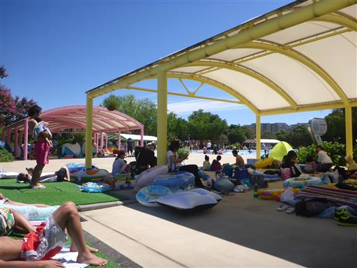
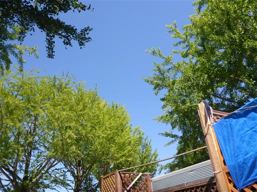
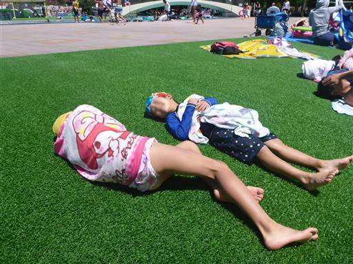

昭和記念公園レインボープール
| 日付 | 2018年8月17日（金） |
|---|---|
| メンバー | 家族（長女・7歳、長男・5歳） |
| アクセス | 車 |
昨日は残念ながら伊豆に行けなかった。
息子の体調は回復し1日暇なので、プールに行くことにする。
到着は10時とオープン時刻より30分も遅れてしまった。
平日は休日と違って道路が混んでいるのが辛い。
一方、遅れても駐車場に空きがあるのは平日の良いところだ。

空はきれいに晴れ渡っている。
気温は高いのだが風が強くかなり寒い。

寒いのでプールに入ったり出たりしながら、半分くらいはプールサイドでごろごろして過ごす。
一人で子供二人を見ていると、なかなかウォータースライダーをやる余裕もないが、
子供たちはたっぷり楽しめたようだ。

他の記録